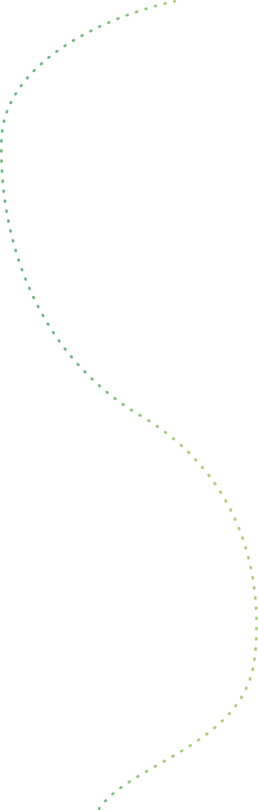
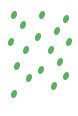

朝の目覚めに
アラームの代わりに、鳥のさえずりで一日をスタート。 ベランダに出て深呼吸するだけで、心が整います。
川・鳥・風・雨—— 私たちのまわりには、無数の音が溢れています。 少し意識を向けるだけで、日常がやさしく変わります。
日常のどんな場面でも、自然の音は寄り添ってくれます。

アラームの代わりに、鳥のさえずりで一日をスタート。 ベランダに出て深呼吸するだけで、心が整います。
ランチタイムに公園へ。 スマホをしまって、周りの音に耳をすませてみてください。 それだけで午後が変わります。
家路を急ぐ前にひと呼吸。 夕暮れの虫の声や風が、一日のリセットを手伝ってくれます。
気分や場面から、聴きたい自然の音を探してみましょう。

ちょっとした工夫で、自然の音はもっと身近になります。
通勤・通学中、片耳だけ外してみる。これだけで、街の音や風の音がぐっと近く感じられます。
ベンチや窓辺で、1分だけ目を閉じてみる。視覚が休まると、音の遠近や方向が不思議なほどはっきりしてきます。
雨や風の日こそ、普段は聴けない音に出会えるチャンス。窓を数センチだけ開けて、室内の静けさと外の天気が重なる音を楽しんでみて。
同じ公園でも、春と秋では聴こえる音がまるで違います。お気に入りの一場所を「定点」に決めて、月をまたいで通ってみる。